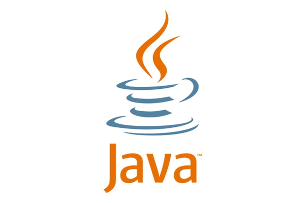
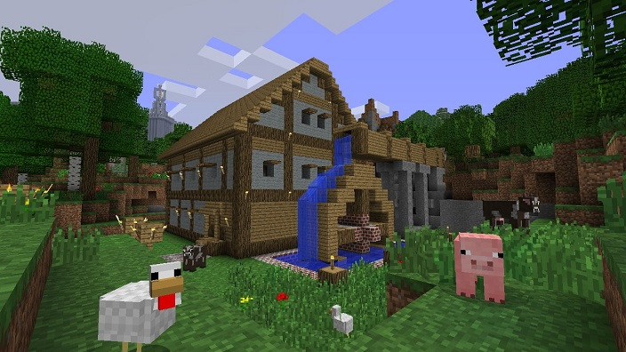

Index
Le Java

1) qu'est ce que c'est
Java est un langage de programmation orienté objet créé par James Gosling et Patrick Naughton,
employés de Sun Microsystems, avec le soutien de Bill Joy (cofondateur de Sun Microsystems en 1982),
présenté officiellement le 23 mai 1995 au .SunWorld
La société Sun a été ensuite rachetée en 2009 par la société Oracle qui détient et maintient désormais Java.
Une particularité de Java est que les logiciels écrits dans ce langage sont compilés vers une représentation
binaire
intermédiaire qui peut être exécutée dans une machine virtuelle Java (JVM) en faisant abstraction du système
d'exploitation.
Le langage Java reprend en grande partie la syntaxe du langage C++. Néanmoins, Java a été épuré des concepts les plus subtils du C++ et à la fois les plus déroutants,
tels que les pointeurs et références, ou l’héritage multiple contourné par l’implémentatio
n des interfaces. De même, depuis la version 8, l'arrivée des interfaces fonctionnelles introduit
l'héritage multiple (sans la gestion des attributs) avec ses avantages et inconvénients tels que l'héritage en diamant. Les concepteurs ont privilégié l’approche orientée
objet de sorte qu’en Java, tout est objet à l’exception des types primitifs
(nombres entiers, nombres à virgule flottante, etc.) qui ont cependant leurs variantes qui héritent de l'objet Object (Integer, Float...).
Java permet de développer des applications client-serveur. Côté client, les applets sont à l’origine de la notoriété du langage. C’est surtout côté serveur que Java s’est
imposé dans le milieu de l’entreprise grâce aux servlets, le pendant serveur des applets, et plus récemment les JSP (JavaServer Pages) qui peuvent se substituer à PHP, ASP
et ASP.NET.
2) Quelques exemples

Parmis eux on retrouve des jeux connus comme
Minecraft